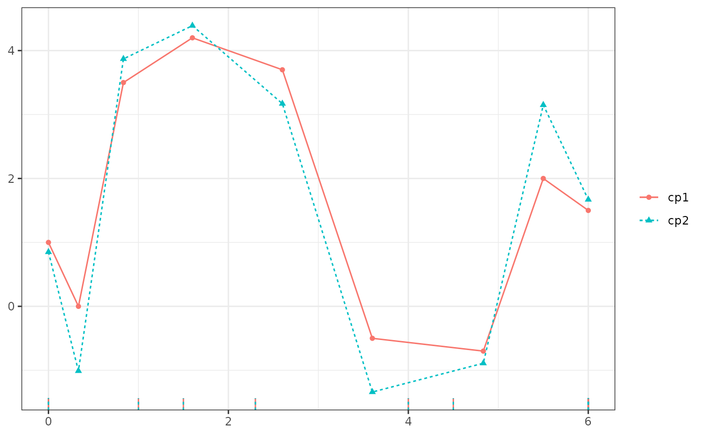
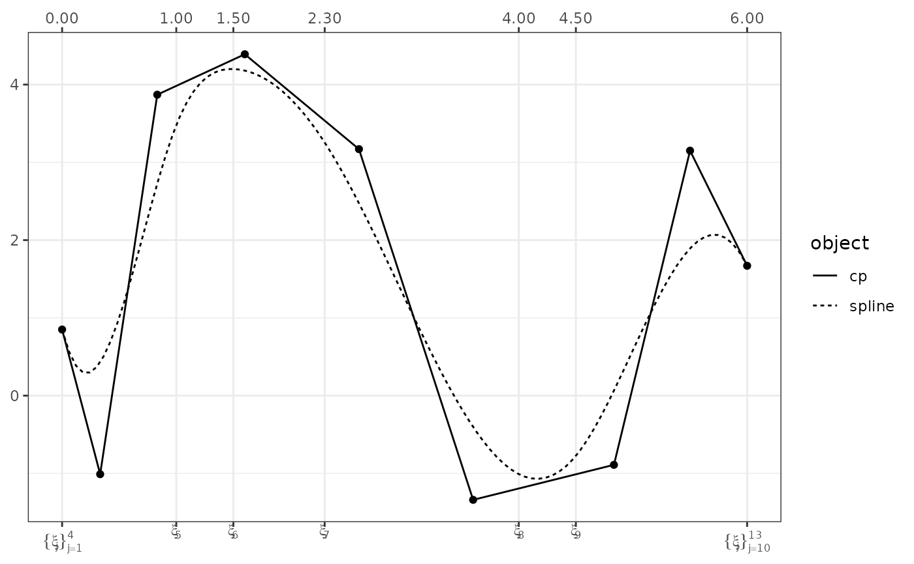
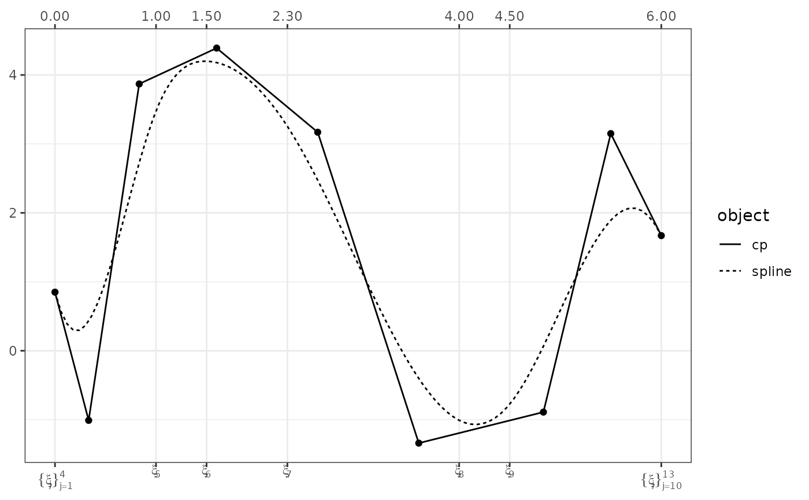

Plotting control polygon(s) and/or the associated spline(s) via ggplot2
Usage
# S3 method for class 'cpr_cp'
plot(
x,
...,
comparative,
show_cp = TRUE,
show_spline = FALSE,
show_xi = TRUE,
color = FALSE,
n = 100,
show_x = FALSE,
digits = 2
)Arguments
- x
a
cpr_cpobject- ...
additional
cpr_cpobjects- comparative
when
TRUEusecolorto distinguish one spline from another, whenFALSEcolorto highlight the control polygon and spline with different colors, and plot the knots the wayplot.cpr_bsdoes. When missing, the default ifTRUEif more than onecpr_cpobject is passed in, andFALSEis only onecpr_cpobject is passed.- show_cp
logical (default
TRUE), show the control polygon(s)?- show_spline
logical (default
FALSE) to plot the spline function?- show_xi
logical (default
TRUE) usegeom_rugto show the location of the knots in the respective control polygons.- color
Boolean (default FALSE) if more than one
cpr_cpobject is to be plotted, set this value to TRUE to have the graphic in color (line types will be used regardless of the color setting).- n
the number of data points to use for plotting the spline
- show_x
boolean, so x-values
- digits
number of digits to the right of the decimal place to report for the value of each knot. Only used when plotting on control polygon with
comparative = FALSE.
Examples
x <- runif(n = 500, 0, 6)
bmat <- bsplines(x, iknots = c(1, 1.5, 2.3, 4, 4.5), bknots = c(0, 6))
theta1 <- matrix(c(1, 0, 3.5, 4.2, 3.7, -0.5, -0.7, 2, 1.5), ncol = 1)
theta2 <- theta1 + c(-0.15, -1.01, 0.37, 0.19, -0.53, -0.84, -0.19, 1.15, 0.17)
cp1 <- cp(bmat, theta1)
cp2 <- cp(bmat, theta2)
# compare two control polygons on one plot
plot(cp1, cp2)
plot(cp1, cp2, color = TRUE)

plot(cp1, cp2, color = TRUE, show_spline = TRUE)
plot(cp1, cp2, color = TRUE, show_cp = FALSE, show_spline = TRUE)
# Show one control polygon with knots on the axis instead of the rug and
# color/linetype for the control polygon and spline, instead of different
# control polygons
plot(cp1, comparative = FALSE)
 plot(cp1, comparative = FALSE, show_spline = TRUE)
plot(cp1, comparative = FALSE, show_spline = TRUE)
 plot(cp1, comparative = FALSE, show_spline = TRUE, show_x = TRUE)
plot(cp2, comparative = FALSE, show_spline = TRUE, show_x = TRUE)

plot(cp1, comparative = FALSE, show_spline = TRUE, show_x = TRUE)
plot(cp2, comparative = FALSE, show_spline = TRUE, show_x = TRUE)
